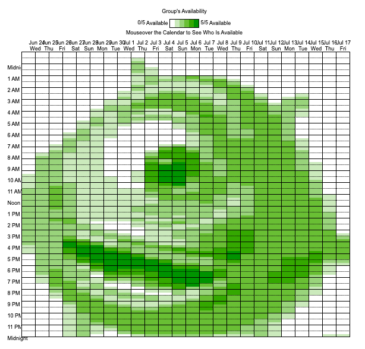

Art on when2meet.com
www.when2meet.com is a simple web-based tool used to schedule meetings. A group leader send out a link, individuals fill out their availability, and the website displays the most-available meeting times. The results are displayed live in the form of a multi-shaded green calendar, where darker greens means more people are available, and lighter greens mean fewer.
When2meets are a powerful solution to the logistic nightmare of scheduling meetings; I can attest to the amount of valueable college student time they have saved over the years. Even still, they're pretty darn boring, especially within the context of improv troupe, Cujokra. For 5 minutes every trimester, our award-winning laugh per minute (LPM) rate grinds to screeching halt as we sit down to schedule our recurring practices. With the standup comedy group always on our heels in the LPM race, we can't afford to have a boring moment. I had to find a way to inject a joke into the process. It was through the lens that I took another look at when2meet.com, and saw a canvas.
I made the tool in a weekend, having lots of fun, pulling lots of hair, and learning a lot about python, web scraping, and script running on websites. In the end, here's how it basically works: Given an image and a when2meet link, the program pixelizes the image, converts it to grayscale, determines the darkness of each pixel, and sends a corresponding number of bots one-by-one to the link to recreate the image. For the dark parts of the image, all or most bots are 'available', and for the light parts, few are.
It was a fun project and it turned out much better than I expected. My original goal was to make a creeper from minecraft-- a pretty basic pixel art image, but by the end I was able to recognizebly render full-on photographs. This allowed for some pretty great reveals to my freinds which consisted of inside joke photos or memes. Here's the github link, and an example photo below. 